第一篇泰嶽歌
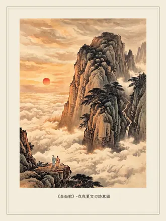
泰嶽歌 泰嶽歌 戊戌夏，與友人自濟南驅車南行赴泰山，夜過杜甫望岱門，聞松濤陣陣。清晨拾階而上，沿途摩崖林立。友人知書者，遂以千年書史點評百家石刻，嬉笑怒罵盡合章法。及頂，見雲海縱橫，極目開闊，攬山川之壯美，發千古之憂思，嘆時事之多艱，感光陰之難留。身為華夏子孫，長於神州故園齊魯大地，數訪泰嶽而今為之歌，幸哉
壯哉盤古歿！頭顱化泰山。
拔地擎日月，通靈接九天。
勢吞西華壓衡嶽，氣奪中嵩秩北恆。
東方堪為首，萬物春發生。
陽谷入汶陰入濟，水繞環侍幾百峰。
岱廟月觀南天杳，玉皇登臨唱其名。
摩崖望心驚！
筆筆斑駁聞刀刻，步步溯源欲何之？
倉頡已去書猶在，卻叫遠古皆漫失。
大道曾可知！
封禪數千載，富貴冀長安。
歷歷梟雄路，血沃幾人全。
天聽天視自民始，敬天惜民王者稱。
日出岱頂懸丹赤，澤被神州沐蒼生。
禮樂何幸興齊魯，齊魯何德擁岱宗。
古風遠傳神旨意，四海澄明側耳聽。
錄自《千山獨行》第四頁
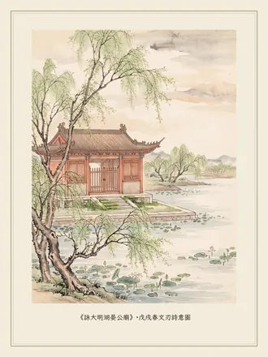
詠大明湖晏公廟 詠大明湖晏公廟 齊國宰相晏嬰，身材矮小却智勇善辯。他冒死弔唁昏庸的莊公，用「二桃」智除「三士」，使楚不辱使命，諫王戒奢惜民，以政治遠見和外交才能聞名於諸侯。戊戌春清晨獨步大明湖畔，見廟門深掩，階生綠苔
長棲六尺水雲深，湖畔高風何處尋。
忠悼庸君懷死志，智除悍士寫奇聞。
擢才出使不辱命，諫上愛民曾顧身？
千古波光知未遠，粼粼無語對晨昏。
錄自《千山獨行》第六頁
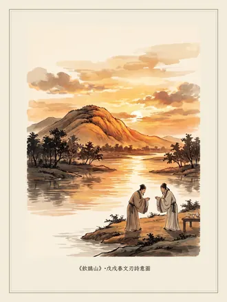
飲鵲山 飲鵲山 鵲山位於黃河北岸，每年春夏烏鵲飛翔佈滿山巔，相傳先秦名醫扁鵲曾在此煉丹並葬於此。戊戌春二月事件後，途經濟南與友人共飲論時，淚和酒下，日暮大醉
太息停箸論時悲，借酒吞聲雙淚垂。
豈慮己失私怨討？但伐民欲至公回！
諸君逐鹿觀已久，歧路亡羊覺可追。
日暮飲別長拱手，西窗半沒滿天暉。
錄自《千山獨行》第七頁
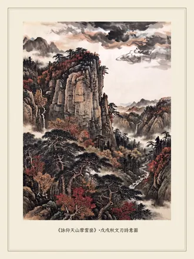
詠仰天山摩雲崮 詠仰天山摩雲崮 青州西南仰天山林海茫茫，峰巒峭壁隱現於蒼松翠柏中。摩雲崮地勢險要易守難攻，起義先民在此曾多次擊退官軍圍攻。摩崖石刻上的詩文不僅記錄有他們的憤怒、反抗、寧死不屈，更有衝天豪情和詼諧調侃
登高頂禮摩雲寨，豪氣衝霄自古名。
崮險盜強難聚斂，官疲兵憊妄收功。
斑斑石刻先民怒，歷歷膝屈今日紅。
長嘯仰天忍別去，松風萬壑默無聲。
錄自《千山獨行》第八頁
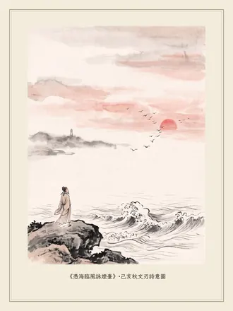
憑海臨風詠煙臺 憑海臨風詠煙臺 煙臺境內有煙臺山，因明朝洪武年間為防倭寇曾在此設置狼煙墩臺而得名。己亥秋赴貴州修文謁陽明洞前，清晨於開發區金沙灘觀海
煙水無涯夜有終，我心如海照長空。
和光風浪連天起，也逐沙鷗向日紅。
錄自《千山獨行》第九頁
第二篇廬山謠
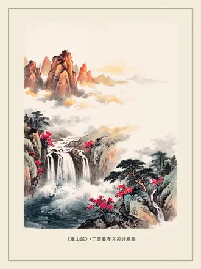
廬山謠 廬山謠 登臨含鄱口觀五老峰上日出，探禹跡，謁周匡飛仙之所，訪太白樂天東坡之遺蹤，沿五老峰三疊泉瀑布步行下山。司馬遷《史記》云：「余南登廬山，觀禹疏九江。」今得步先人之塵，感慨既深，不覺豪情勃發，醉賦〈廬山謠〉。匡廬奇秀甲天下，信夫
嗟爾匡廬秀，天下冠群峰！
旭日透雲海，削出金芙蓉。
粉黛山抹湖為鏡，朝霞入水澄碧空。
峨峨峰嶺晦明幻，渺渺江湖一攬成。
俄頃雲霧起，天地隱真容。
迷離今古路，踽踽訪仙蹤。
禹穴駐足何北望，指點九江俱向東。
周匡避仕飛升處，俗客高揖遠慕名。
太白方疑來世外，東坡早悟道初成。
豈有古來真名士，大林淚灑桃花風。
風來蕩天清，引我下碧峰。
天梯倚絕壁，步步歎心驚。
斷崖仰千尺，高鳥巢其中。
蒼翠沾衣濕，寒浸五月濃。
草木滿山知冷暖，映日杜鵑觀欲燃。
五老肅然立，相送更無言。
三疊殷勤轉，轟鳴落深潭。
人生欲識廬山面，唯有快意居其間。
登臨自古應長歎，仙人乘風何時還。
蕭蕭異代空祈盼，耿耿前途夢魂牽。
回望遙辨來時路，山頂雲橫意闌干。
錄自《千山獨行》第十二頁
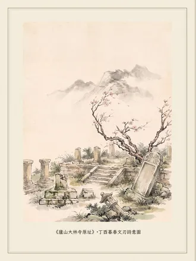
廬山大林寺原址 廬山大林寺原址 丁酉訪廬山。同是暮春時節遊大林寺，白樂天為之寫下「長恨春歸無覓處，不知轉入此中來」的大林寺已蕩然無存，難以憑弔。千年之後的這片土地上只有桃花依然盛開，雨後微風中含情低首，頻頻致意，一如當時
桃花仍對暮春風，寺去人歸今古同。
淚灑江州無限雨，晨昏長洗千年紅。
錄自《千山獨行》第十四頁
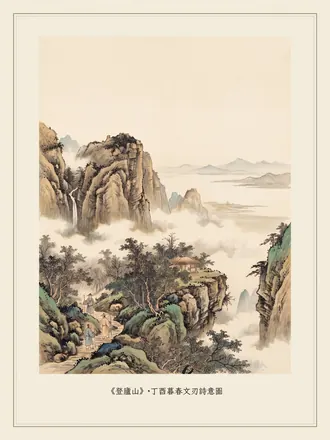
登廬山 登廬山 禹疏九江，周匡飛仙，司馬遷南登廬山，思之不免神往
結廬高遠向層巔，雲繞東南自古傳。
九水禹疏誰著史，一湖日照我登山。
朝攀撥霧仰峰險，暮宿和衣滴露寒。
修道方知非本願，人間浪跡勝飛仙。
錄自《千山獨行》第十五頁
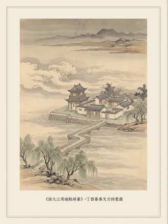
詠九江周瑜點將臺 詠九江周瑜點將臺 薄暮甘棠煙水亭，流光浩淼亂雲生。
周郎將點群英會，曹魏戟折卒鼎成。
北據長江觀日月，南憑廬邑待陰晴。
臨危勇略誰堪比，獨慕高風向夜空。
錄自《千山獨行》第十六頁
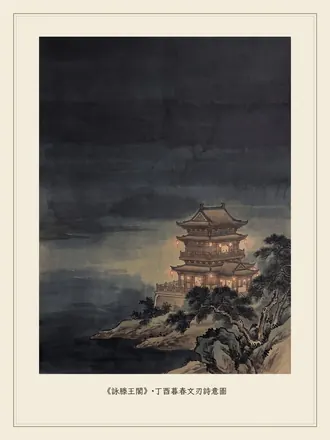
詠滕王閣 詠滕王閣 滕王閣因唐太宗之弟――滕王李元嬰始建得名，又因王勃詩句「落霞與孤鶩齊飛，秋水共長天一色」而流傳後世。滕王閣屢毀屢建，承載頗多歷史。丁酉夜過，聞閣中有舞樂之聲
滕王宴樂賴閣傳，頻毀頻興始子安。
未有神童作一序，豈容紈絝記千年。
名因權重而今易？才以文稱自古難！
夜舞樓中誰側目，此江山亦彼江山。
錄自《千山獨行》第十七頁
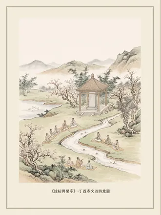
詠紹興蘭亭 詠紹興蘭亭 蘭亭以王羲之書法和曲水流觴詩會而聞名。書法是古代六藝之僅存。丁酉春，聞友人論書史淵源，驚歎於「入陣法」、「移情」、「幻魔」、「無相神明」、「屋漏痕」之博大精深。徘徊於亭上，流連而忘返，慕古人之高風
筆走龍應百壑風，無心入陣忘行蹤。
移情山水何廣大，魔幻古今誰證明。
如夢平生覺未醒，似真來世隱還興。
驀然回首尋歸路，不見森林千萬重。
錄自《千山獨行》第十八頁
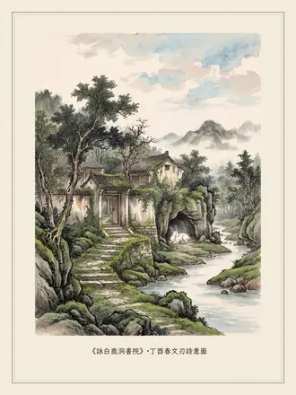
詠白鹿洞書院 詠白鹿洞書院 相傳唐朝李渤曾隱居洛陽讀書，其所養白鹿能通人性並常跟隨左右，時人稱其居所為白鹿洞。書院始建於南唐，宋代朱熹重建並講學於此。丁酉春訪，見門庭蕭條，苔痕沒階，訪客極少，洞中白鹿長臥不出，不禁感歎
白鹿通靈何喟然？蕭條書院隱林泉。
名高身後斯文盛，苔沒階前謁影單。
有繼經學兼釋道，無根塵世盡錢權。
洞中歸臥應長歎，再待人間五百年。
錄自《千山獨行》第十九頁
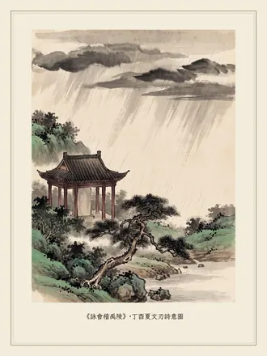
詠會稽禹陵 詠會稽禹陵 大禹是上古時代的英雄，他在洪水氾濫百姓蒙難之際率眾治水歷盡艱苦，「三過家門而不入」，終成大功。不僅如此，他在身居高位之後，依舊保持生活簡樸，謙敬禮賢，更不輕易挑釁開啟戰端。感時而歌
禹陵何莊嚴！會稽見青山。
天低風悲切，雨落憶從前。
肆虐洪水患，生民危累卵。
慨然承天命，露宿率風餐。
疏導因水勢，築堤開千山。
耒耜未稍歇，矢志解倒懸。
過門無暇入，治水十三年。
蒼天可憐見，誠意動山川。
九河盡疏浚，九州治且安。
玄圭昭天下，九鼎大功難。
位高卑宮室，推國禮才賢。
致孝敬神鬼，衣食薄無添。
克勤邦永固，克儉家久傳。
不矜兼不伐，天下莫爭先。
敬德仰百世，垂民法萬年。
巍巍高山上，音容今宛然。
嘉德久罕見，禮樂崩於前。
臨別頻回望，此地有古賢。
問風何嗚咽？問雨何漣漣？
我心斯有淚，灑祭天地間。
錄自《千山獨行》第二十頁
第三篇過華山
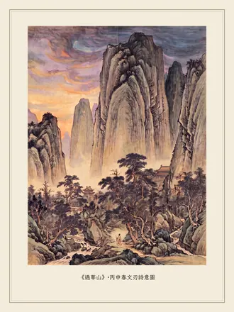
過華山 過華山 華山古稱西嶽，是華夏文明發祥地，中華之「華」，即得名於此。丙申乘車離西安赴洛陽，日暮途經遙望華山作
星河隱隱顯，盡在華山巔。
絕頂遙回望，風煙十數年。
蓮花明星現，相邀素手牽。
駕鴻入冥紫，飄升向雲端。
衛叔無處覓，太白有遺篇。
踽踽獨行路，相伴唯古賢。
東攬洛陽道，西北辭長安。
巍巍撼心魄，西嶽古艱難。
人生本孤寂，歎息世風殘。
斜陽薄暮裡，倦鳥自思還。
錄自《千山獨行》第二十四頁
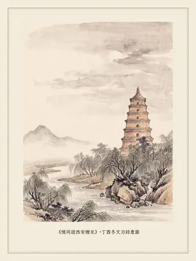
憶同遊西安贈友 憶同遊西安贈友 才俊少年思縱橫，千金買醉我心傾。
逍遙雁塔小寰宇，慷慨昭陵大武功。
灞水潺潺無去意，驪山渺渺有別情。
不知夢醒身何處，漢月秦關隱碧空。
錄自《千山獨行》第二十五頁
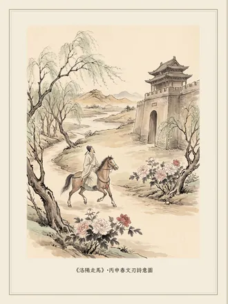
洛陽走馬 洛陽走馬 丙申春首赴洛陽觀牡丹
四月春風送我來，東都有意著花開。
含情萬種牡丹韻，要試小生七步才。
錄自《千山獨行》第二十六頁
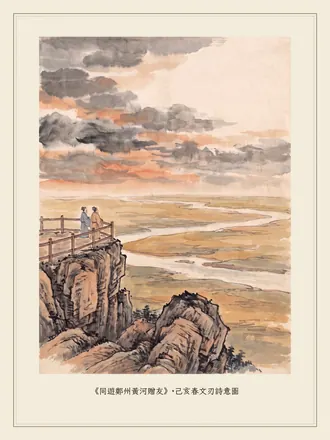
同遊鄭州黃河贈友 同遊鄭州黃河贈友 黃河、黃土地、黃帝、黃皮膚已然成為中華民族的象徵。《漢書》云：「中國川源以百數，莫著於四瀆，而黃河為宗。」在鄭州桃花峪，黃河闊瀉出山，平注中原，居山巔而瞰大河，濁浪激蕩，氣勢雄渾。己亥春登中華龍脈之邙山，遠眺廣武古戰場和楚漢中分天下的鴻溝暮雲、黃河古渡
黃河黃土炎黃帝，華夏搖籃爭未畢。
問鼎中原逐古今，邙山遠眺暮雲裡。
戚戚廣武咽悲聲，瑟瑟鴻溝驚戰慄。
千載尚聞刀劍鳴，人文初祖忍哭泣。
錄自《千山獨行》第二十七頁
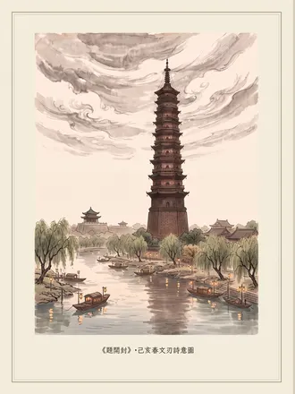
題開封 題開封 春秋時鄭國首先在此築儲糧城「啟拓封疆」，後有八個朝代定都，孕育了上承漢唐下啟明清影響深遠的宋文化。己亥春訪開封，遊御河、鐵塔、龍亭、包公祠、禹王臺等名勝。觀當今社會權力氾濫，不受制約監督，民眾呼求跪拜清官而不得，思之不免淒然
開拓封疆北宋興，八朝富麗匯東京。
四方爭看塔非鐵，五鳳咸飛龍有亭。
黑面包公昔可拜，卑宮大禹古能行。
我來祠外長拱手，今夜御河燈火清。
錄自《千山獨行》第二十八頁
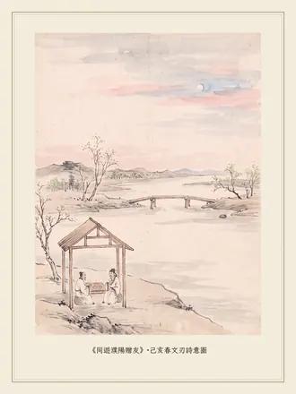
同遊濮陽贈友 同遊濮陽贈友 濮陽是中華文明的重要發祥地，上古時期曾發生黃帝蚩尤之戰，春秋時期作為當時較先進的衛國政治經濟文化中心近四百年。己亥春訪，友人陪我晝則遍遊古蹟，夜則同飲談古論今，針砭時弊，好不暢快
源溯三皇古帝丘，夏商周代衛風流。
千秋以降同一醉，濮水之陽話九州。
錄自《千山獨行》第二十九頁
第四篇五峰引
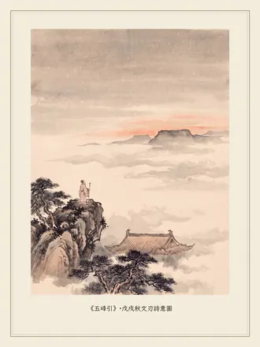
五峰引 五峰引 戊戌秋返作
難辭萬里遠，問道五臺山。
星燦垂如鬥，路遙轉似盤。
獨登臨至暗，萬籟入風寒。
智慧清涼界，諸君聽我言：
時世混濁大道隱，淫奢貪枉任橫行。
羸弱百姓不堪苦，積弊妖孽肅難清。
皇家高踞菩薩頂，近傍山溪污水傾。
滿目淩亂泥濘路，民居暗掩草叢生。
寺院何宏大！金身何精美！
法力何無極！頂禮何虔誠！
人間智慧千年祀，塵世尤悲苦難深。
蕭瑟經學佛道顯，宋明嘗盼理紛綸。
生逢末法諸般惡，無奈金經久染塵。
天下為公曾可求，斯民仰賴定乾坤。
身處菩薩地，當念菩薩經。
錄自《千山獨行》第三十二頁
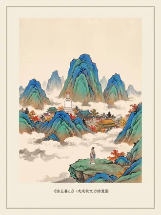
詠五臺山 詠五臺山 五臺山五峰聳立高出雲表，原為神仙方士所居之紫府，是中國四大佛教名山之首，文殊菩薩的道場，也是中國唯一青廟黃廟共處的佛教道聖地。戊戌秋訪，見皇權與佛寺同體，香火鼎盛中一片跪拜祈求，不禁感歎國民何時可以不跪？自己不遠萬里來朝拜五臺，何曾是為了個人？
文殊妙法料興衰，雲外金臺紫府開。
寺立青黃容異見，國傷權貴遣雄才。
千年民跪久未改，萬里我朝曾自哀。
濟世當今智何在？清涼石上問如來。
錄自《千山獨行》第三十四頁
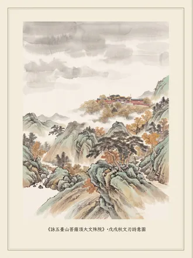
詠五臺山菩薩頂大文殊院 詠五臺山菩薩頂大文殊院 戊戌秋訪，遙望菩薩頂金光燦爛，近觀方知是皇家寺院。佛教講「空」，皇家恰是「不空」的極致；佛教講眾生平等，帝王講等級森嚴；佛教修來世，皇權盼長生；佛教重精神，權勢重物質。二者如水火之不同，卻在此共存，不禁大怒於文殊菩薩之不作為
莊嚴金頂紫府開，絕世清涼傾五臺。
靈鷲飛來通智慧，文殊遁去避塵埃。
十方跪拜權日顯，千古敕封民益衰。
徒享人間多少祭，真容空對不堪裁。
錄自《千山獨行》第三十五頁
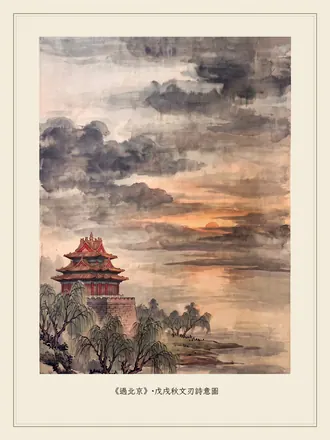
過北京 過北京 兩個甲子前，譚嗣同在火車站附近菜市口被斬首示眾，朝廷唯權而已，何「清」之有？戊戌過北京站不入，感昔士風猶存而今不在，痛哭而去，事為二月記
陰山背倚面南興，克己尊天苦傳承。
周武伐商終暴政，召公封燕建新城。
金元有意延社稷，明清無心憐眾生。
今古斯民多少淚？帝都飄灑入胡風。
錄自《千山獨行》第三十六頁
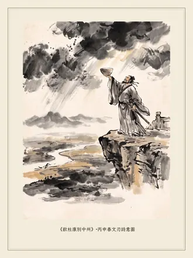
飲杜康別中州 飲杜康別中州 同飲壯士酒，壯志滿心頭。
彈劍觀雲起，作歌聽雨收。
登臺籌廟策，落筆寫春秋。
願借三分業，掃平漢室憂。
錄自《千山獨行》第三十七頁
第五篇黃山詩
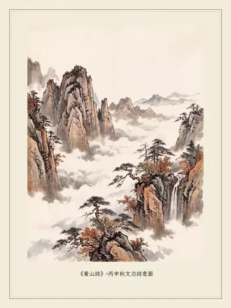
黃山詩 黃山詩 「五嶽歸來不看山，黃山歸來不看嶽」！黃山被譽為天下第一奇山，其七十二峰中，蓮花峰、光明頂與天都峰並稱三大主峰。傳說軒轅黃帝曾在此煉丹，故稱「黃山」。黃山有奇松、怪石、雲海、飛瀑四絕：奇松迎客松是黃山的標誌；怪石如夢筆生花、喜鵲登梅、老僧採藥、蘇武牧羊、飛來石、猴子觀海聞名遐邇；雲海瑰麗壯觀享譽古今，如紅樹鋪雲，雙剪峰流雲都是奇景；飛瀑中人字瀑、百丈泉和九龍瀑並稱黃山三大名瀑，其中九龍瀑自羅漢峰與香爐峰之間分九疊傾瀉而下且每疊有潭，是黃山最為壯麗的瀑布。丙申秋登黃山，震撼於中華山河之壯美，感慨世事之紛紜，人生之須臾。大丈夫立於天地之間，當勇於擔當，勉力前行
黃山看罷萬山空！石怪松奇雲海橫。
似幻還真仙界裡，蓮花天都向蒼穹。
靈峰神秀七十二，散落紅塵墜繁星。
造化鍾情絕妙地，人間自古有英風。
煉丹軒轅何羽化？夢筆太白怎復生？
觀海靈猴心有待，思歸玉真淚無窮。
徽學徽墨徽商路，黃土黃山黃老行。
胼手前人歷艱苦，而今吾輩得飛升。
朝聞百鳥九龍瀑，暮攬流霞雙剪成。
身隱霧濃晴欲雨，風鳴谷幽秋如冬。
鋪雲紅樹醉堪臥，補天飛石記仙蹤。
百丈流蘇泉作帶，一山蒼黛看蔥蘢。
登高俯仰光明頂，不拜長揖迎客松。
雲海茫茫失去路，松濤颯颯正澄清。
山中自有靈秀在，大千無計避崢嶸。
遺世獨立非我願，側身飄落御罡風。
我觀奇秀遍中外，七言聊記第一峰。
錄自《千山獨行》第四十頁
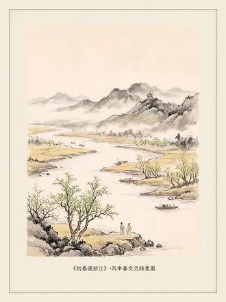
初春過浙江 初春過浙江 浙江境內江流曲折，人傑地靈。智慧超群者如范蠡力救越國危亡，品格高尚者如嚴光不慕名利富貴，令人敬仰。我輩亦當思追古人，勉力自強，則民眾可享豐足太平，國家必然昌達興旺
錢塘花未芳，曠野淺著黃。
江靜藏天遠，山深待日長。
國危出范蠡，名顯隱嚴光。
如畫江山裡，今人可自強。
錄自《千山獨行》第四十二頁
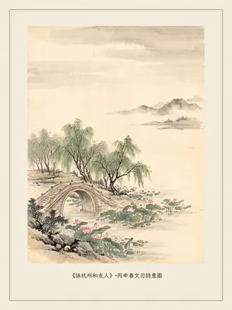
詠杭州和友人 詠杭州和友人 杭州以其優美的江南景色和豐富的人文古蹟著稱，蘇堤春曉那盛開十里迎風搖曳的荷花和靈隱山間月下金桂的芬芳讓人久久難忘。漫步白堤、蘇堤，與古人同遊，快哉
人文美景冠江南，千古雅稱難復添。
水色天光時變換，風流佳話代承傳。
曉荷十里春堤掩，靈桂三秋月落山。
數日悠閒心所願，白蘇相與賽詩篇。
錄自《千山獨行》第四十三頁
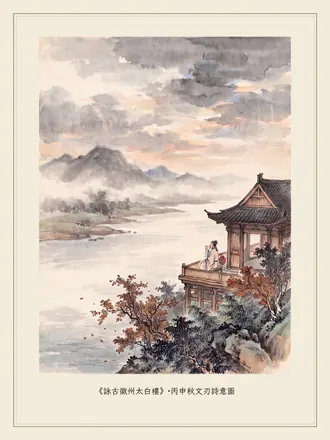
詠古徽州太白樓 詠古徽州太白樓 太白樓倚山臨江景致絕佳，相傳李白訪隱士不遇曾飲酒題詩於壁。丙申秋訪，思青蓮舊事，感歎「余亦能高詠而斯壁不可題，縱詩可題壁而斯人亦不得遇」。紛紜半生的俗世求索正如這靜靜流淌的練江逝水了無痕跡，眼前隨風飄轉的落花和這雷雨後婉囀的鳥鳴聲正是曾感動過太白的相同景致！且斟一杯酒，邀這位神交已久的故人同飲吧
濁世青蓮未可尋，黃昏樓望見秋深。
有心花落和雷雨，無意鳥鳴通古今。
一飲練江知醉醒，半生欲海忘浮沉。
七言題壁風流再？玉液金樽饗故人。
錄自《千山獨行》第四十四頁
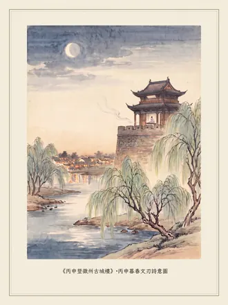
丙申登徽州古城樓 丙申登徽州古城樓 清夜聽琴
琴歌餘韻繞樑輕，水映萬家燈火明。
春去花開晚風裡，仁和樓上細聆聽。
錄自《千山獨行》第四十五頁
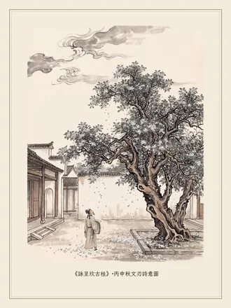
詠呈坎古桂 詠呈坎古桂 呈坎古村落按《易經》「天人合一」理論選址佈局，構成天然八卦的奇觀，是徽州的風水寶地。漫步古院落銀桂樹下，細小的桂花隨風飄落，灑滿衣襟
銀桂生古院，寂寂四百年。
每歲逢秋末，花謝無人憐。
客自遠方來，致意虯幹前。
廣蓋為我冠，繁星覆我衫。
酷暑蔭蔽日，嚴冬阻風寒。
大千觀自古，成長歷艱難。
艱難志未改，芳馨意彌堅。
枝葉輕拂面，流蘇盈眼簾。
徘徊久難去，不忍踏階前。
滾滾紅塵裡，一方純淨天。
香魂隨風舞，簌簌落心間。
錄自《千山獨行》第四十六頁
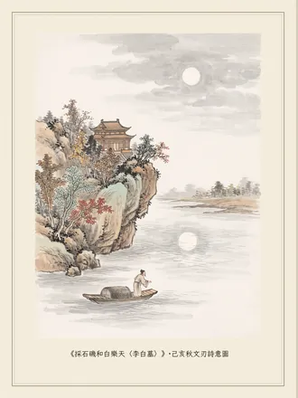
採石磯和白樂天〈李白墓〉 採石磯和白樂天〈李白墓〉 「採石江邊李白墳，繞田無限草連雲。可憐荒壟窮泉骨，曾有驚天動地文。但是詩人多薄命，就中淪落不過君。」樂天不懂太白啊！
牛渚長歌楓夜秋，李白捉月醉何求？
江流千古文千古，笑對人間枉自愁。
錄自《千山獨行》第四十七頁
第六篇盤山記
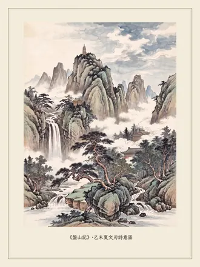
盤山記 盤山記 盤山是京東第一名山，「水下盤」、「石中盤」和「松上盤」各以水、石、松為佳。著名景點有三盤暮雨、迎客松、萬松寺、雲罩寺、掛月峰等。乙未仲夏聞許兄厚全遊盤山，遙思和之
盤山入雲端，京東屹萬年。
地分京津塘，史盛清唐漢。
五月地氣炎，雨後長天藍。
古木匝地蔭，飛鳥鳴林間。
清凜水潺潺，溯流近下盤。
路轉驚突現，飛瀑峭壁懸。
碎瓊風飄絮，灑落濕衣衫。
珠玉瀉潭底，雲行潭底天。
潭光照去影，顧盼尤自憐。
石徑伴峰迴，山景隨水換。
陡峭豁然開，摩崖多中盤。
岩刻年久遠，草行楷隸篆。
煌煌武功銘，巍巍聖德宣。
皇家多遊樂，民間多苦難。
巨松翳高日，嶙峋怪石險。
坐觀雲來去，慨歎人世艱。
鐘鼓聲不遠，寺簷隱隱現。
德高僧莊嚴，檀香風送遠。
世間萬般苦，人生奈何天。
禮佛一炷香，來世多眷念。
勘破今生事，長續下世緣。
萬松萬松寺，雲罩雲罩晚。
斜陽上盤道，止步遙長歎：五峰擁掛月，
一塔鎮盤山。鳶飛戾九霄，
鷹展遊汗漫。個人獨得志，
不見為民安。天高風必疾，
日暮峰頂寒。疾風高寒處，
夕照心思還。千載梟雄骨，
萬代王霸篇。千山萬壑裡，
荒草一塚間。嗟而速歸去，
迷途早應返。長歌盤山路，
天地為泫然。
錄自《千山獨行》第五十頁
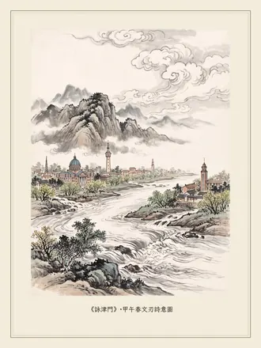
詠津門 詠津門 甲午春自京赴津，北登燕山，東臨渤海，攬華北平原之闊，泛舟海河觀五流，遊昔日袁世凱（項城）練兵小站，梁啟超（任甫）飲冰室等遺址，思山川地理之壯美，感「天子津渡」之悠遠，贊中華博大深厚之人文精神
燕王舊渡命天津，北臥高山東海臨。
畿輔要衝守今古，首倡洋務起風雲。
項城有意兵空練，任甫無雙退著文。
六百年間繁華地，五流緩緩匯晨昏。
錄自《千山獨行》第五十二頁
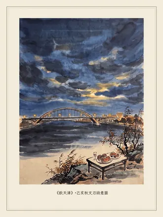
飲天津 飲天津 己亥秋訪，五糧液配大閘蟹，不禁豪情勃發
碧落流光顧自傾，長虹盡沒壯心胸。
瓊漿稀世應謝我，同是煩人真性情。
錄自《千山獨行》第五十三頁
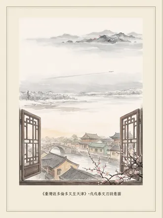
臺灣返多倫多又至天津 臺灣返多倫多又至天津 離臺時的百花將謝和返回多倫多時的雪阻冰封，使夜抵天津的我心中鬱鬱不平。清晨醒來竟見居所窗外繁花似錦，這還差不多！
臺灣上月謝花遲，前日離加花未知。
惱卻小爺高喝斥，津門一夜滿花枝。
錄自《千山獨行》第五十四頁
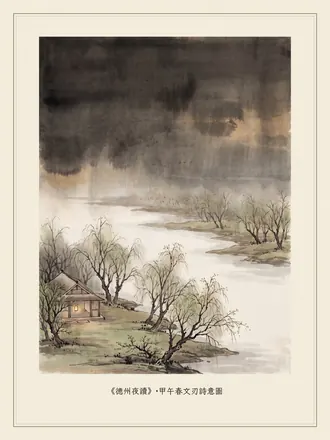
德州夜讀 德州夜讀 甲午春赴德州，遍尋史跡不得。友人告余此地古蹟雖多但皆已無存，僅剩地名聊可追憶。夜深不寐
天衢暗淡夜深幽，汶口龍山杳莫求。
羿箭九發驅烈日，禹門三過啟神州。
察顏切諫東方隱，鐵骨嚴筋誰共遊？
長恨高風無覓處，蒼茫獨對歷春秋。
錄自《千山獨行》第五十五頁
第七篇登峨眉
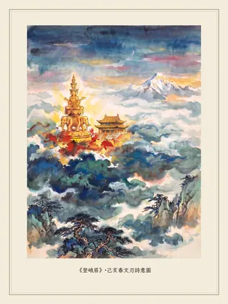
登峨眉 登峨眉 身登絕域問蒼茫，菩薩金身燦日光。
四種功德清淨地，華嚴有聖面十方。
春回大地風雷起，夏眺萬山覆雪霜。
貢嘎雄姿出世外，傲然負日映天翔。
三江流闊淩雲匯，飄逸秀眉霞補妝。
白水寺高臨水意，清音閣古韻悠揚。
朝陽初醒動山崗，暮靄數合林木蒼。
香火漸微人盡去，明明新月照心傷。
幡然莫歎來時險，勉力前行去日長。
大士慈悲方頓悟，理行獨對夜無疆。
蒲公藥採蓮花印，白象六牙托願王。
浩瀚風雲接古道，起伏巒壑共星光。
長辭一去海天路，夢裡峨眉秀未央。
錄自《千山獨行》第五十八頁
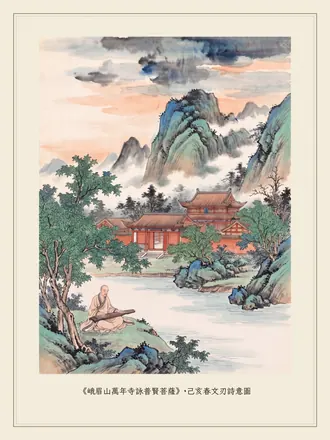
峨眉山萬年寺詠普賢菩薩 峨眉山萬年寺詠普賢菩薩 相傳萬年寺為漢代蒲公採藥禮佛處，殿內供奉著騎在六牙白象上的普賢菩薩，寺中白水池至今仍水清如鏡。李白曾為在池邊彈琴的僧人廣浚賦詩：「客心洗流水，餘響入霜鐘。不覺碧山暮，秋雲暗幾重。」
蜀僧已去春山暮，白水青楓繞有音。
想是當年聽綠綺，陶然趺醉到如今。
錄自《千山獨行》第六十頁
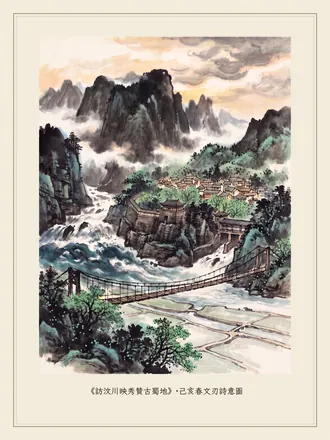
訪汶川映秀贊古蜀地 訪汶川映秀贊古蜀地 《輿地紀勝》云：「禹之導江，由岷山以施功。」《水經注》云：「江水又東別為沱，開明之所鑿也。」李冰開創性地修建了都江堰水利工程，蜀地從此「沃野千里，水旱從人」，成為「天府之國」
盆地高原展畫圖，岷山中斷破空出。
奔雷遠落聽常有，清碧低澤捧卻無。
治水神工道恒久，拓疆天府眾豐足。
禹明蜀守都江堰，遍訪人間總不如。
錄自《千山獨行》第六十一頁
第八篇青城山攬勝
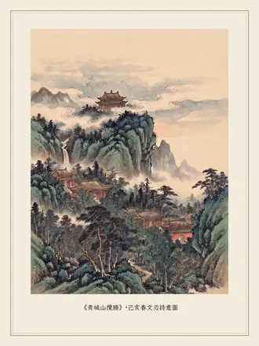
青城山攬勝 青城山攬勝 「青城天下幽」！全山林木青翠四季常青，諸峰環峙狀若城廓。東漢張道陵來此首創道教，使之成為四大道教名山之首。老君閣位於最高峰峰頂，晴霽可眺覽岷邛青峨及天府平川百里風光。己亥春登臨，思追千古，頓覺心曠神怡
青幽合璧儼如城，更有神山雲外生。
大道無極何處始，老君閣上晚風清。
錄自《千山獨行》第六十四頁
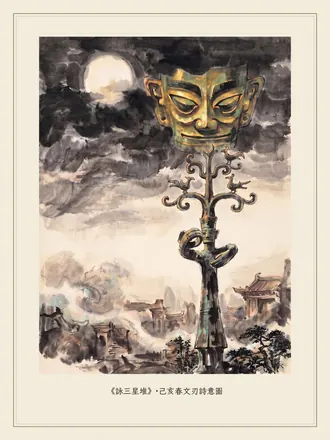
詠三星堆 詠三星堆 三星堆是人類最偉大的考古發現之一，青銅神樹、青銅大立人、縱目青銅面具、純黃金面罩和金杖等文物，都是代表遠古時代權力和財富的稀世神品。其中棲有九隻神鳥的青銅神樹又稱建木，是古蜀帝王們登天的通道，寄託著他們死後重生返回都廣的願望
縱目銅人金面罩，通天建木棲神鳥。
不知眾帝幾時歸？伴月三星都廣老。
錄自《千山獨行》第六十五頁
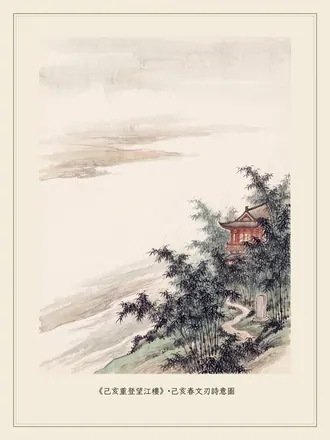
己亥重登望江樓 己亥重登望江樓 望江樓（崇麗閣）位於成都錦江南岸的茂林修竹中，是為紀念唐代女詩人薛濤建造的。薛濤自幼聰穎好學，能詩善文又熟諳音律，有詩五百多首，元稹、白居易、令狐楚、裴度、杜牧、劉禹錫、張籍等都曾與她詩詞唱和，其中元稹「菖蒲花發五雲高」就是懷念薛濤的詩句。己亥春重登，回想自己第一首古詩，正是多年前在崇麗閣所得，不禁感慨
才動菖蒲花未高，校書墳畔雨瀟瀟。
竹深徑曲斯時晚，井古閣危昔日昭。
崇麗秋詩初悟道，望江春色再聽潮。
廿年重謁魂何在？繞墓三吟慰寂寥。
錄自《千山獨行》第六十六頁
第九篇辭天山
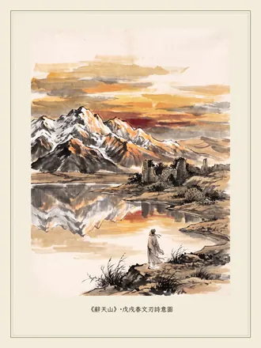
辭天山 辭天山 詠東歸過烏拉泊鹽湖
夕陽送我遠，落暉滿天山。
山前水如鏡，回望照眼簾。
戚戚此心動，或告古鹽湖。
湖邊輪臺古，唐後漸荒蕪。
我來新疆前，久慕古輪臺。
我遊西域時，遍訪久縈懷。
辭去不得見，遺憾無人識。
夕陽知我意，浮水昭心池。
蕭蕭千載事，通明剎那知。
再尋窗外暗，前塵隱幽寒。
戈壁連大漠，飛馳在身邊。
星光堪洗漱，歸臥過天山。
錄自《千山獨行》第七十頁
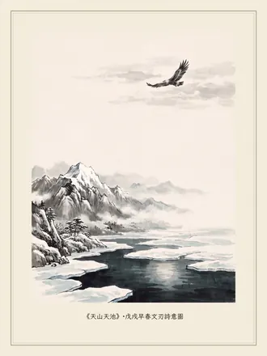
天山天池 天山天池 戊戌早春訪，池冰半融
仙姿高冷罕人間，玉骨冰肌春尚眠。
嗔怪雲鷹銜日過，半睜嬌眼對天山。
錄自《千山獨行》第七十一頁
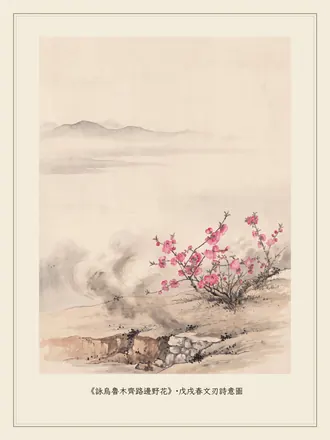
詠烏魯木齊路邊野花 詠烏魯木齊路邊野花 質本非俗心本潔，山中清寂命中缺。
從來市井風塵裡，終日懨懨凋未覺。
錄自《千山獨行》第七十二頁
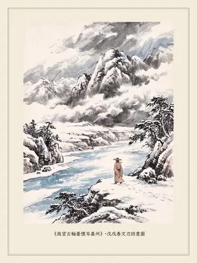
南望古輪臺懷岑嘉州 南望古輪臺懷岑嘉州 站在這片古老而廣袤的土地上，千載以後重讀岑參的〈白雪歌送武判官歸京〉，其人其景，如在眼前。那真摯的友情和高貴的品格在物欲橫流的今天尤顯珍貴
長歌解我憂，三詠韻難收。
白雪陽春杳，高山碧水流。
輪臺千載地，青史一嘉州。
古調今安在？當風誠可求。
錄自《千山獨行》第七十三頁
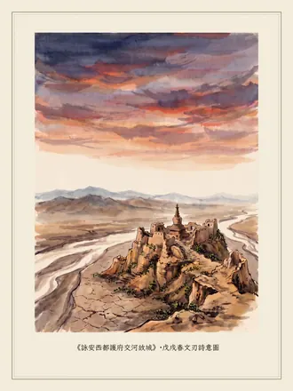
詠安西都護府交河故城 詠安西都護府交河故城 交河故城是古車師前國都城，位於吐魯番西部的一座柳葉形島上，是世界上最大最古老的生土建築城市遺址，因河水分流城下而稱交河。唐代西域最高軍政機構安西都護府就設在此地，詩人李頎曾留下「白日登山望烽火，黃昏飲馬傍交河」的詩句
水落島出河照城，流光逝處覓前蹤。
車師漢尉國難守，西域唐都邊未寧。
今古相接人豈遇，風雲已遠歎徒生。
方尋護府省公事，累累荒丘呼不應。
錄自《千山獨行》第七十四頁
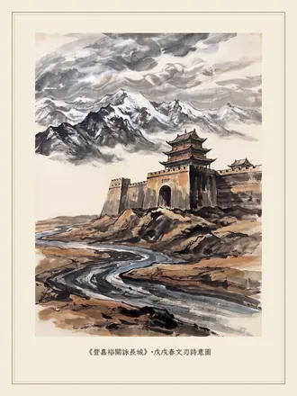
登嘉裕關詠長城 登嘉裕關詠長城 「天下第一雄關」地勢險要建築雄偉，其城牆橫穿沙漠戈壁，北連黑山懸壁長城，南接明長城最西關口「第一墩」，扼守寬約十五公里的峽谷地帶，連同討賴河谷天然屏障，構成「河西咽喉」「邊陲鎖鑰」。戊戌春訪
昂首當風西控邊，屈身塵世落層巒。
走廊千載咽喉扼，功業一生魂夢牽。
雪化逢春討賴闊，胡窺牧馬止祁連。
雄關表裡興亡路，雲亂龍飛不計年。
錄自《千山獨行》第七十五頁
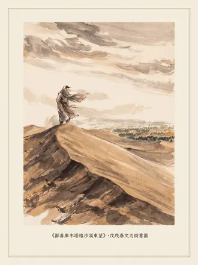
鄯善庫木塔格沙漠東望 鄯善庫木塔格沙漠東望 飛巾遮面登沙山觀沙海
萬里狂沙萬里家，登高無計望天涯。
鄉思未審多如許，點點隨風透面紗。
錄自《千山獨行》第七十六頁
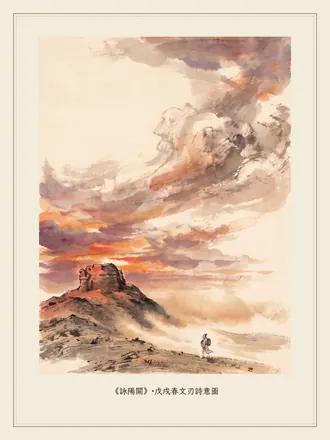
詠陽關 詠陽關 漢武帝「列四郡、據兩關」以來，陽關一直是絲路南道的必經關隘。陽關在隋唐廢棄後慢慢荒蕪，今天只剩被稱為「陽關耳目」的墩山烽燧立於大漠戈壁之上。戊戌春訪
悵然春盡未著花，自古離人東望家。
非是晚晴歸欲早，夕陽一沒動風沙。
錄自《千山獨行》第七十八頁
西域詠張騫 西域詠張騫 張騫在甘泉宮被漢武帝宣詔出使西域後，經數十年風餐露宿，兩度在匈奴被俘，捨生忘死完成了自己的使命。司馬遷云：「然張騫鑿空，其後使往者皆稱博望侯，以為質於外國，外國由此信之。」壯哉
捨命鑿空撼世間，漢節不辱數十年。
爾來博望稱欽使，緣起甘泉武帝宣。
兩陷匈奴拓絲路，一通西域贊開元。
丹心堅忍青史鑒，歸奏雲臺雙鬢斑。
錄自《千山獨行》第七十九頁
第十篇洱海臨風詠蒼山
洱海臨風詠蒼山 洱海臨風詠蒼山 己亥春黃昏洱海泛舟
點蒼十九峰，壁立破長空。
爾來幾萬歲，成汝白頭翁。
雲嶺至此險，嵯峨鬼神工。
銀髮翠浮雪，白雲玉帶橫。
山山夾溪水，東流去復生。
蒼山十八溪，清碧澤古城。
繽紛蝴蝶泉，幻妙雲弄驚。
絕頂潭洗馬，世祖元畢功。
下關風初定，上關花欲興。
洱海月未老，點蒼雪已融。
山川大壯美，青春正無窮。
俯仰今古路，長嘯落日紅。
錄自《千山獨行》第八十二頁
詠洱海日出 詠洱海日出 己亥春晨起晚，一路飛奔至洱海邊觀日出，幸天不負我
紅日一出大地驚，水光幻妙曉雲輕。
青山月隱詳回顧，金海鷹飛撲面迎。
有志衝天春永駐，無憐掛袂歷嚴冬。
我心澄澈風初定，波湧沉沉至此清。
錄自《千山獨行》第八十三頁
詠昆明 詠昆明 「彩雲之南」的昆明自古被稱為「壯麗大城」，唐朝曾因輕敵討伐南詔失敗導致安史之亂，宋太祖却因與大理揮斧劃境分治帶來西南的平安，尤其近代重九起義和護國戰爭維護了來之不易的共和，浩然之氣垂範後世。己亥春訪
壯麗大城傾世間，千年飄渺彩雲南。
青銅漆器滇池現，金馬碧雞鳴鳳山。
旌指無節唐致亂，斧揮有度宋平安。
先賢浩氣長垂範，力護共和一片天。
錄自《千山獨行》第八十四頁
詠滇池黃昏 詠滇池黃昏 初至昆明，與友人同訪
西山銜日沉碧水，風起浪開千朵花。
五百里春池作酒，遠人長醉忘天涯。
錄自《千山獨行》第八十五頁
詠雲南陸軍講武堂 詠雲南陸軍講武堂 己亥春訪，感前人舊事，熱血澎湃
貫日衝天起四方，將星勇烈此登場。
初驚重九戰光復，又喜護國流遠芳。
歃血共和誅暴虐，悲歌民眾誓激昂。
翠湖西畔今同望，豪氣填胸競夜長。
錄自《千山獨行》第八十六頁
詠大理古城 詠大理古城 古蹟眾多的大理城位於蒼山之下洱海之濱，崇聖寺三塔是著名的佛塔和地標，五華樓曾是強盛的南詔國王設宴招待西南十六國使節和賓客之地，忽必烈征服大理時曾駐兵樓前仰望五華樓
文獻名邦花正紅，複櫻簇簇點春濃。
五華樓探蒼山雪，三聖塔回洱海風。
昔冠西南十六地，今壓中外百千城。
駐足仰望應同歎，形盛如斯未可輕。
錄自《千山獨行》第八十七頁
詠麗江 詠麗江 己亥春訪，對麗江的別緻小巧不免輕視。思此心宏闊，非眼前景物可以局限，遂登高望遠以遊目騁懷。古老的納西文獻在這片土地上流傳已數千年，不遠處橫斷山脈中數條大江在肆意奔流，雲貴和青藏高原上的白雲從眼前飄過，與終年覆雪的玉龍山頂渾然一體，讓我怎麼才能分辨出來呢
獨登萬古樓，浩蕩晚風收。
城美小別緻，心高大自由。
納西文獻久，橫斷數江流。
滇藏雲如雪，玉龍安可求？
錄自《千山獨行》第八十八頁
詠玉龍雪山 詠玉龍雪山 玉龍雪山是北半球距離赤道最近而終年積雪的納西人神山，由石灰岩與玄武岩構成的十三座雪峰與山頂積雪交相輝映連綿不絕，宛若一條巨龍飛舞。附近的藍月谷、雲杉坪、黑龍潭、金沙江、甘海子以及主峰扇子陡如詩如畫，美不勝收
邈邈十三峰探天，銀岩雪頂共盤旋。
春風常歎高蹈苦，遠客初經低緯寒。
藍谷雲坪扇子陡，金沙甘海鎖龍潭。
逢人漫道麗江北，勝卻世間無數山。
錄自《千山獨行》第八十九頁
第十一篇珞珈山懷遠
珞珈山懷遠 珞珈山懷遠 庚子年楚地大疫擴散海內外，百姓染疫，病斃眾多。在封城封樓的疫區中心，友人協助加拿大捐贈的醫護用品送達天門第一醫院，感而賦
昔訪珞珈山，櫻花向日妍。
人潮湧花海，笑語春滿天。
今思珞珈頂，春去春又還。
不見人潮湧，應有春依然。
草木茂如昨，青翠無復添。
東湖波未亂，粼粼報平安。
三鎮通九省，江漢鼎中天。
荊楚繁盛處，四聚有能賢。
盤龍遺舊跡，首義辛亥年。
形勝歷千古，運數罕人寰。
縱橫水道隔，大風起平原。
頑疫來雖猛，民眾當可全。
遠眺燈初上，點點萬家難。
珞珈堅且美，臨屏淚不乾。
何當春重置？絡繹滿湖山。
錄自《千山獨行》第九十二頁
詠武漢 詠武漢 武漢有「九省通衢」之稱，地理位置得天獨厚，不僅歷史文化悠久，近代還湧現了一大批首創共和的傑出人物，其「文氣高潔」「天懷博大」讓人動容。獨自徘徊於此，追古撫今，不勝感傷
漢水背依啟粵湘，西通巴蜀控長江。
俱言雲夢昔時險，首創共和今日芳。
文氣高潔常勇烈，天懷博大必吉祥。
徘徊三鎮觀形勝，輩有人傑何感傷？
錄自《千山獨行》第九十三頁
黃鶴樓贈和友人 黃鶴樓贈和友人 己亥春與友人同遊黃鶴樓，感其才華未顯於當世
落拓江州世未知，梅花春盡有歸時。
滿城無會東方意，千載唯識崔顥詞。
黃鶴一飛樓尚在，此身百轉恨猶癡。
憐惜古調難重現，慨為昔人再續詩。
錄自《千山獨行》第九十四頁
襄陽評王粲〈登樓賦〉 襄陽評王粲〈登樓賦〉 仲宣遺世賦登樓，雁過襄陽幾度秋？
七子名高羞冠冕，十年客久愧汀洲。
華實蔽野國得祀，黍稷盈疇民可留。
日月更遷人未老，河清有待正堪求。
錄自《千山獨行》第九十五頁
第十二篇衡山吟
衡山吟 衡山吟 己亥五月以來，嶺南多風雨。均物銓德久治江南的朱雀，雖風華獨領卻因一籌莫展而羞愧難當，與某對談良久，感其言奮筆為之記
朱雀來世外，邈邈逾萬年。
上應軫星翼，下治大江南。
鈞物銓德天地稱，風華獨領絕中原。
南山千古秀，振羽向雲端。
昔日神農嚐百草，降真難覓清秋早。
火神遊息林竹茂，祝融峰上群峰小。
唐虞巡狩祭祀處，道佛皆言此方好。
綿延八百里，靈峰七十二。
西雪峰，東羅霄，左右長侍相對出。
湘江殷勤趨於前，回雁千里岳陽古。
山川大壯美，名士何其多。
東洲有幸會船山，博學高格驚人寰。
石鼓聞濤風雲亂，八方仰賴匯群賢。
李杜長歌洞庭晚，曾左擊楫中流湍。
共和喋血千秋頌，浩氣長留嶽麓山。
衡嶽才俊地，海內賴擎天。
地靈人傑復何求，民治國興享自由。
長揖聖帝祝融廟，念念誠意未盡收。
物重德下難應驗，歸去獨善理可全。
金簡峰下玉書現，時事清平當再還。
言訖辭北客，回首望嶺南。
振翅欲飛去，惶惶心不安。
錄自《千山獨行》第九十八頁
端陽節汨羅江祭屈原 端陽節汨羅江祭屈原 屈原的〈離騷〉、〈天問〉等作品將楚辭體發揮至前所未有的高度。楚國都城郢被秦軍攻破後，屈原感到救國無望，於農曆五月初五端午節作〈懷沙〉投汨羅江而死
悵對瀟湘梅雨遲，九歌江上少人知。
郢都北破國無望，青史文名楚有辭。
芳草萋萋遮去路，汀雲渺渺辨歸時。
懷沙一躍驚千載，風起向天合淚思。
錄自《千山獨行》第九十九頁
贊石鼓書院 贊石鼓書院 石鼓書院三面環水，四面憑虛，位置獨特，風光秀麗，自古有「石鼓江山錦繡華」的美譽。書院始建於唐，地處湘江、蒸水、耒水交匯處，是湖湘文化發源地。千百年來，物華天寶、人文薈萃，湧現出一大批影響中國的優秀人物
江山錦繡文錦繡，才俊輩出難盡誇。
想是湖湘風水異，人傑自古半中華。
錄自《千山獨行》第一百頁
詠嶽麓書院 詠嶽麓書院 嶽麓書院自漢魏建立以來出現了許多影響歷史的著名人物，例如「朱張會講」的朱熹與張栻，清朝中興重臣曾國藩、左宗棠等，更有為民請命甘願赴死的譚嗣同。百年以降，時務學堂中譚嗣同留下的「殘雷」古琴仍在黃昏時刻不彈自鳴，發出清越之聲
學才時務此承傳，書院千年嶽麓山。
漢魏史中驚已見，湖湘海內總相關。
朱張會講道非古，曾左同心國易全。
更有憂民思壯士，殘雷一曲氣衝天。
錄自《千山獨行》第一百〇一頁
己亥秋三祭蔡公松坡墓 己亥秋三祭蔡公松坡墓 蔡鍔在辛亥革命中領導了推翻清朝的雲南新軍起義，四年後又領導了反袁稱帝的護國軍起義。他不僅勇略過人律己甚嚴，而且與士卒同甘共苦。惜其英年早逝，國家失一棟樑，中華國運因一人而改變。自戊戌二月事件以來，一年半後方得來墓前一哭。蔡公千古，惜哉！痛哉！
蔡公勇略蕩塵埃，湘水長流嶽麓開。
七尺忠貞許國難，一生仁厚拯民衰。
風回墓道吟高義，淚浸碑銘覆綠苔。
環侍楓香勤守護，英靈未遠盼歸來。
錄自《千山獨行》第一百〇二頁
岳陽樓懷古 岳陽樓懷古 己亥秋登逢微雨，下瞰洞庭，遙望君山，賞「洞庭天下水，岳陽天下樓」之美景。樓於三國時期始建，是東吳大將魯肅的閱軍樓，唐代詩人李白曾為此樓賦詩，北宋時范仲淹因滕子京重修此樓寫下了千古名篇〈岳陽樓記〉
臨風能掃悵無由，八百洞庭一色秋。
子敬練防西蜀卻，太白登詠美名留。
己悲何較樂人後？物喜誰懷天下憂？
難覓先賢千古事，水雲浩渺問沙鷗。
錄自《千山獨行》第一百〇三頁
登杜甫江閣 登杜甫江閣 己亥秋黃昏，登長沙杜甫江閣。夕陽欲沒嶽麓山，湘江之上波光點點。這是杜甫晚年困守孤舟之地，因此也成為千百年來中華知識份子的傷心之地
還是斜陽江欲沉，家國無奈總關心。
孤舟浮水困窮處，風送昔人萬點金。
錄自《千山獨行》第一百〇四頁
離湘 離湘 衡陽至岳陽沿湘江北上整千里
日照湘江逐麗波，相隨千里洞庭阿。
衡陽不問岳陽遠，獨歎君山草木多。
錄自《千山獨行》第一百〇五頁
第十三篇詠灕江九馬畫山
詠灕江九馬畫山 詠灕江九馬畫山 自古無數人來此數馬，數了無數的馬，而今安在哉！聞諸君數馬之舊事，感歎
觀馬誰爭幾畫山？風雲逐水斷恒難。
人生自古數無限，一任逝時流碧天。
錄自《千山獨行》第一百〇八頁
舟行灕江 舟行灕江 桂林至陽朔，集中了桂林岩溶地形山水的精華，以「山青、水秀、洞奇、石美」著稱，間有「深潭、險灘、流泉、飛瀑」等佳景。置身此地，真有「舟行碧波上，人在畫中遊」之感
百里酒濃波未興，鏡中天水更多情。
醉來兩岸山千座，跌落紛紛各不同。
錄自《千山獨行》第一百一十頁
九月九日之桂林 九月九日之桂林 秋至仍暖，首訪此地，見桂樹滿城，桂花滿樹。遊兩江四湖、七星岩、象山，飲洞藏美酒，贊
時至中秋贊桂花，桂林香浸萬千家。
兩江舟賞天何暖，一飲洞藏人必誇。
將踏七星動風雨，方扶單槳碎雲霞。
最憐映水象山夜，鷗滿汀洲月滿沙。
錄自《千山獨行》第一百一十一頁
詠黃果樹瀑布 詠黃果樹瀑布 首日到訪，見陽光燦爛，碧山白瀑，空水氤氳。夜宿山中聽瀑而眠，覺風雨驟至，瀑布水流聲交匯風雨聲幾難分辨，竟不知是否在夢中。晨起復訪，見天地水汽漫漫，黃果樹瀑布渾黃而浩大，山谷中萬流洶湧聲若奔雷，始知昨夜風雨聲非夢也
濺珠崩玉下雲層，幽谷蒼蒼白霧封。
昨夜夢中風喚雨，群山咆哮走蛟龍。
錄自《千山獨行》第一百一十二頁
詠甲秀樓 詠甲秀樓 甲秀樓以貴陽南明河中一塊巨鼇大石為基建成，河水從兩邊流過匯成涵碧潭，樓側由石拱浮玉橋連接兩岸，朱樑碧瓦水光山色，堪稱甲秀。明清以來文人騷客題詠甚多，因樓建於王陽明來黔之後，不得見其題詠，惜之
秀甲黔中詞賦長，群山擁侍動八荒。
河吟涵碧遙浮玉，樓詠當風古仕祥。
科舉立登難僥倖，巨鼇坐歎易更張。
陽明應悔昔來早，不見雄文題上方。
錄自《千山獨行》第一百一十三頁
謁柳柳州墓 謁柳柳州墓 柳宗元詩文大才，雖少年得志，但被貶永州十年後隨即再次被貶，政治上失意又貧病交加，四年後即病逝柳州，葬於羅池。他生前因力行德政而受到當地百姓的敬仰，至今羅池廟裡仍然保留香柑亭、荔子碑等當時遺跡供後人憑弔
流風千載越群山，子厚高格今古傳。
德政四年傷罪貶，華章一代壯文淵。
香柑自比亭久遠，丹荔眾歌碑永全。
廟裡濃蔭晦明幻，羅池長坐辨君顏。
錄自《千山獨行》第一百一十四頁
登白萍洲望九嶷山 登白萍洲望九嶷山 白萍洲綠樹成蔭植被茂盛，位於瀟水和湘水交匯處，南望九嶷蒼梧之野，迥龍塔、香零洲、黃葉渡、朝陽岩是其附近名勝。當年舜皇魂歸至此，已經來到了瀟水的盡頭，但眼前的湘水却更加浩渺，距離君山依然山遙水長，難與娥皇女英團聚
疊翠浮洲匯兩江，九嶷邈邈夢魂傷。
梧山人老君山杳，瀟水情終湘水長。
潮漲迥龍隨夜雨，香零黃葉沐朝陽。
白萍頻惹秋風處，千古依依說舜皇。
錄自《千山獨行》第一百一十五頁
零陵古城中秋夜記 零陵古城中秋夜記 古城夜市散去，清夜獨賞
幽幽瀟水滿笙歌，流盡繁華燈在河。
想是上天覺落寞，更留圓月照清波。
錄自《千山獨行》第一百一十六頁
詠柳子廟 詠柳子廟 壯年屈志愚溪畔，憂懼難平恨不甘。
僻地一方何幸運？文才千古此承傳。
西岩欲赴萍洲晚，東寺思歸瀟水寒。
當世勿循循舊跡，今時莫寫寫江山。
錄自《千山獨行》第一百一十七頁
第十四篇詠雁蕩山
詠雁蕩山 詠雁蕩山 雁蕩山史稱「東南第一山」，其山頂有湖，蘆葦茂密，結草為蕩，南歸秋雁多宿於此，主要景觀有靈峰靈岩、大小龍湫、三折瀑、羊角洞等。唐代僧人貫休曾寫下「雁蕩經行雲漠漠，龍湫宴坐雨濛濛」的詩句
湖出山頂葦叢生，大雁秋歸經此行。
探日靈峰雲漠漠，逐風龍湫雨濛濛。
泉澤古洞滴甘露，崖破石門展畫屏。
仙域奇絕難盡數，東南海上久稱名。
錄自《千山獨行》第一百二十頁
宿南海之濱三亞 宿南海之濱三亞 二○一五年四月二十一日宿下馬嶺新客棧，樓高觀南海，窗明對椰林。晝宴飲應酬，夜讀憂從中來，揮之而無絕。時雖值旱季，夜半更深，卻也雨疏風驟
話兒滿腹未逢時，椰樹垂頭久莫知。
夜半敲窗何故喚？殷殷風葉報春遲。
錄自《千山獨行》第一百二十一頁
詠釣魚城 詠釣魚城 釣魚城得名於巨神在嘉陵江上釣魚以解百姓饑饉的傳說。在深刻影響了世界格局的「釣魚城保衛戰」中，南宋軍民擊斃蒙古大汗蒙哥，創下了以弱勝強的罕見戰例，故此地被譽為「上帝折鞭處」。登城但見峭壁千尋，古城門、城牆雄偉堅固，嘉陵江、涪江、渠江三面環繞，是天然的兵家雄關
巨神垂釣解民饑，名至宋元曾未奇。
崖峻千尋誰敗北？襟懷三水自屏西。
苦心城築仍難禦，上帝鞭折安可期？
想是不屈華夏血，捨身忠義向披靡。
錄自《千山獨行》第一百二十二頁
遊合肥望績溪 遊合肥望績溪 在包公祠和李鴻章府都未找到長久一直尋找的東西。想到很快要赴績溪拜訪胡適故居，心情卻豁然開朗，整夜不眠。天不亮即出發，儘早去領略那近代歷史上全然不同的風彩
包祠李府未堪師，將赴績溪斜日遲。
坐待天明謁胡適，帶霞山水正其時。
錄自《千山獨行》第一百二十三頁
謁潮州韓文公廟碑 謁潮州韓文公廟碑 「文起八代之衰，而道濟天下之溺，忠犯人主之怒，而勇奪三軍之帥。」韓愈被貶潮州，歷經三個世紀得東坡巨筆立碑，讓人感佩。跨越半個地球，依然可以感到韓昌黎因有後世知音東坡而對人生的執著無悔。古往今來，有幾人如他這樣鵬展九天一朝落難而又幸得隔代知己呢？東坡詩云「公不少留我涕滂，翩然披髮下大荒」，面對這廟碑，思前人舊事，竟無語哽咽
何幸瘴江得此文！時隔三世燦星辰。
昌黎有道酬巨筆，居士無雙羞後人。
四萬里遙南海闊，五千年久北冥深。
飄然披髮未稍住，獨對大荒空淚痕。
錄自《千山獨行》第一百二十四頁
詠香港 詠香港 香港附近自古盛產香木，尖沙咀曾以運香木出口著稱。戰國末期秦軍攻打嶺南時這裡被納入秦國領土，鴉片戰爭清朝戰敗後被割讓給英國。香港曾是重要的國際金融、工商服務業及航運中心，有「東方之珠」的美譽
海陸遠播香木名，水深港闊自天成。
秦攻百越置南郡，英治三遷割滿清。
社稷昌衰風雨路，民心聚散古今情。
明珠稀世同呵護，熠熠東方望振興。
錄自《千山獨行》第一百二十五頁
第十五篇詠陽明山
詠陽明山 詠陽明山 陽明山原名草山，清官府為防賊寇藏匿定期放火燒山導致只長芒草，蔣介石為紀念王陽明將其改名，現在成為臺北市後花園。此處有巨型花鐘和辛亥光復樓，也是遠眺臺北盆地和淡水河最佳場所。戊戌春訪，感民風淳樸，講信修能，不僅繼承了優秀的傳統文化，其自然資源保護和社會環境治理也令人讚歎
野芋初開照眼明，竹湖鳳谷望青青。
火燒山后雨長草，光復樓前風入鐘。
鎮日流芳一帶水，經年滴翠半擁城。
或言節假春錦繡，慣看人潮花海生。
錄自《千山獨行》第一百二十八頁
初宿日月潭夜半聞鴞 初宿日月潭夜半聞鴞 潭邊古木上，夜半一鴞鳴。
執意透重夜，喚來明月升。
九霄聲漸杳，雙水照心清。
萬籟此時寂，良朋仍可聽。
錄自《千山獨行》第一百二十九頁
雨霽臺北登高 雨霽臺北登高 戊戌春，聞報大陸於臺灣海峽實彈演習
撲面蒼茫帶雨迎，樓高窗納滿天風。
驚聞實彈昨試射，慨歎戰雲今驟升。
世紀海峽隔太久，人間華夏本同宗。
輕言獨統誠須畏，表裡河山處處青。
錄自《千山獨行》第一百三十頁
詠臺灣野柳魔鬼岬 詠臺灣野柳魔鬼岬 海蝕風化及地殼運動造就了魔鬼岬綿延羅列的奇石景觀，如燭臺、薑石、仙人腳印、巨猿金剛、玉樹和御座等，其中「女王頭」因面部線條優美，神態像極雍容尊貴的女王而最具代表性，成為野柳地質公園的象徵。戊戌春訪
奇石出野柳，最美女王頭。
高髻謝冠冕，雅儀著風流。
芳容天造就，歲月恨難收。
海浪知心意，喋喋語未休。
燭臺重整罷，獨上薑石遊。
海蝕洞開處，仙人去不留。
初驚巨腳印，方悟金剛愁。
玉樹生紫英，分迎皆列侯。
御座待我至，寂寞已千秋。
千秋猶守望，念此心何求？
作歌題絕壁，一掃今古憂。
錄自《千山獨行》第一百三十一頁
日月潭涵碧樓攬勝 日月潭涵碧樓攬勝 遠眺日月潭氣象萬千，撫今追昔，感慨如同那山光水影綿綿無絕
時空日月本分離，潭聚古今稱第一。
涵碧不足襄盛舉，青天跌落贊神奇。
錄自《千山獨行》第一百三十二頁
詠日月潭涵碧樓 詠日月潭涵碧樓 泛舟潭中遠望，涵碧樓隱入蒼翠中幾不可見，許多重大歷史事件曾發生在這裡。樓前高臨日月潭的泳池與青山碧水完美融合，暢遊其中宛若置身於山水之間
幾番尋訪杳無蹤，涵碧盡溶蒼黛中。
日月潭邊初見面，風雲榜上久知名。
倚山臨水月追日，席地幕天雲伴風。
三角梅開紅似火，樓前一道看分明。
錄自《千山獨行》第一百三十四頁
日月潭黃昏 日月潭黃昏 玄奘寺是玄奘大師頂骨舍利的奉拜處，寺中慈恩塔是蔣介石為其母建造的紀念塔。丁酉年春，自海外乘機萬里返鄉，途經臺北夜宿涵碧樓。黃昏時分隔日月潭遠眺玄奘寺慈恩塔，一時竟不知自己是誰，身處何方，家在何處
薄暮環潭山欲連，煙波飄渺意闌干。
慈恩塔隱層雲外，孝子情彰人世間。
功業一生心有淚，肝腸百轉夜無眠。
故鄉已返重洋遠，仍望家鄉水那邊。
錄自《千山獨行》第一百三十五頁
第十六篇藍山夜臥
藍山夜臥 藍山夜臥 甲午深秋夜宿藍山雪場溫泉賓館，不寐
金絲帷，落地窗，銀漢迢迢湖中央。
纖縷搖曳照不寐，秋風吹水下山崗。
借問秋風來何方？「星河煙波渺蒼茫。
燭龍冷光鎖日月，長夜漫漫何淒涼。
聞道藍山正當時，湖闊如海起朝日。
道道碧草流飛瀑，山山彩錦人如織。」
「碧流如瀑今仍在，山中高樹葉已稀。
楓紅如畫雖難覓，遍地秋餘尚足奇。
晝來徒步登高崗，遠眺重雲蔽湖光。
蕭瑟一片落輝裡，樹樹深秋山山黃。
山中黃葉滿山谷，幾度不辨身何處。
賴有溪水淙淙下，聽流踏落尋歸途。
路轉山迴水聲急，砰然濺落深潭裡。
潭邊久佇不忍離，仰面碎玉風飄絮。
攀岩牽枝繞深潭，細尋水流再不見。
飛瀑日夜長流水，深潭難滿水不添？
返途溪流未再現，悵然有失不欲言。
房中久坐垂頭睡，神思纏繞夢魂牽。
夜半明君動碧波，粼粼波光星之河。
猛醒潭水已入海，秋波頻顧態婀娜。」
我願秋風送秋水，隨夢伴我到銀河。
錄自《千山獨行》第一百三十八頁
聖路易峰滑雪 聖路易峰滑雪 甲午冬首次滑雪，意興飛揚
迷惘乾坤浩蕩風，絕頂駐橇觀蒼穹。
皂衣不和白世界，一劍無聲裂雪峰。
錄自《千山獨行》第一百三十九頁
翠湖山莊 翠湖山莊 翠玉來天外，山居隱莫識。
清晨覓白鹿，無意入瑤池。
鶴遠雲留影，日高人不知。
滿掬淺嚐止，深恐醉非時。
錄自《千山獨行》第一百四十頁
春融 春融 萬物復蘇，大地春再。
冰河初開，南雁北來。
日照紫氛，雲行天外。
空水氤氳，我心快哉！
錄自《千山獨行》第一百四十一頁
萬錦秋意 萬錦秋意 旭日初升照高林，漫步獨思動輕塵。
野馬盤桓傍身舞，白駒流連知我心。
忽有嘎嘎樹頂端，猛醒尚思誰呼喚？
轉身抬頭循聲看，紅頂白羽卓不凡。
不凡紅白據樹顛，神態自若意盎然。
輕舒轉睛聚神觀：何方神聖敢上前？
對視良久未再言，近身欲問時已晚。
別頸弓身雙翅展，倏忽消失彩林間。
極目張望不可見，悵然秋風輕拂面。
樹頂枝杈猶自顫，獨待翎羽再歸還。
一片紅葉知秋意，採歸高臥伴我眠。
錄自《千山獨行》第一百四十二頁
詩文以臺灣中華書局版《千山獨行》為準。配畫由人工智能依詩意與作者實地照片繪製，經作者審定。Texts follow the Chung Hwa Book Co. edition. Paintings were made with AI from the poems and the poet’s own photographs of each site, and reviewed by the poet.